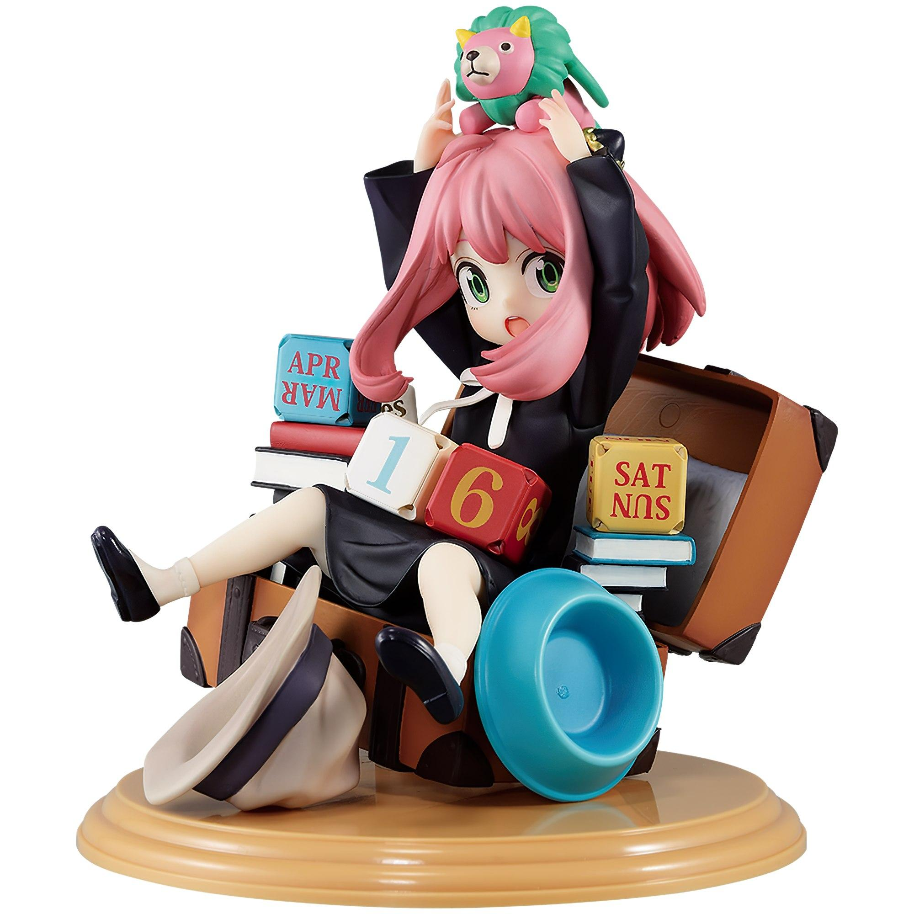
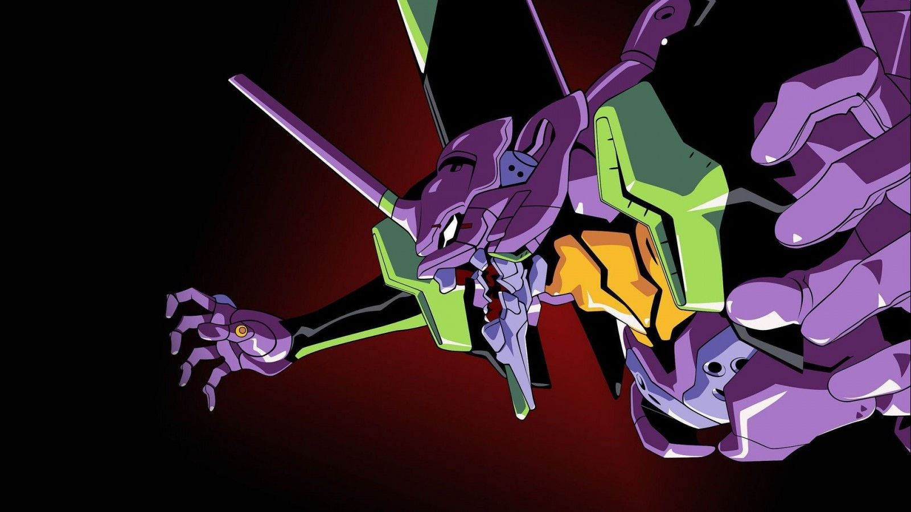

Anime News
Seishun Buta Yarou: Las chicas visten geniales atuendos para nuevos productos
En el sitio oficial para la cadena de tiendas Don Qujiote se anunció una colaboración con la franquicia de Rascal Does Not Dream of Bunny Girl Senpai, en el lanzamiento de una línea de productos que estarán disponibles a partir del próximo 26 de marzo en Japón en distintas sucursales de la compañía.

SPY x FAMILY inspira figuras e ilustraciones para una lotería
La lotería japonesa Ichiban Kuji anunció una colaboración con la franquicia animada basada en el manga de Tatsuya Endo, SPY x FAMILY, que inspirará un sorteo de productos disponible a partir del mes de abril de 2022 en Japón. Los boletos de participación tendrán un precio individual de 700 yenes (alrededor de 7 dólares estadounidenses) e incluye una variedad de productos que serán entregados como premios.

Evangelion: Encuentran una ilustración de Asuka entre los escombros en Ucrania
Una serie de fotografías de la 6A Lobanovsky Avenue en Kiev, Ucrania, se volvieron virales en foros de comentarios en Japón. Como escribió el Servicio Estatal de Emergencias de Ucrania en Telegram, un misil impactó en un bloque de apartamentos de varias plantas (17-18 pisos). En su momento no se informó sobre víctimas y la evacuación estaba en marcha.
